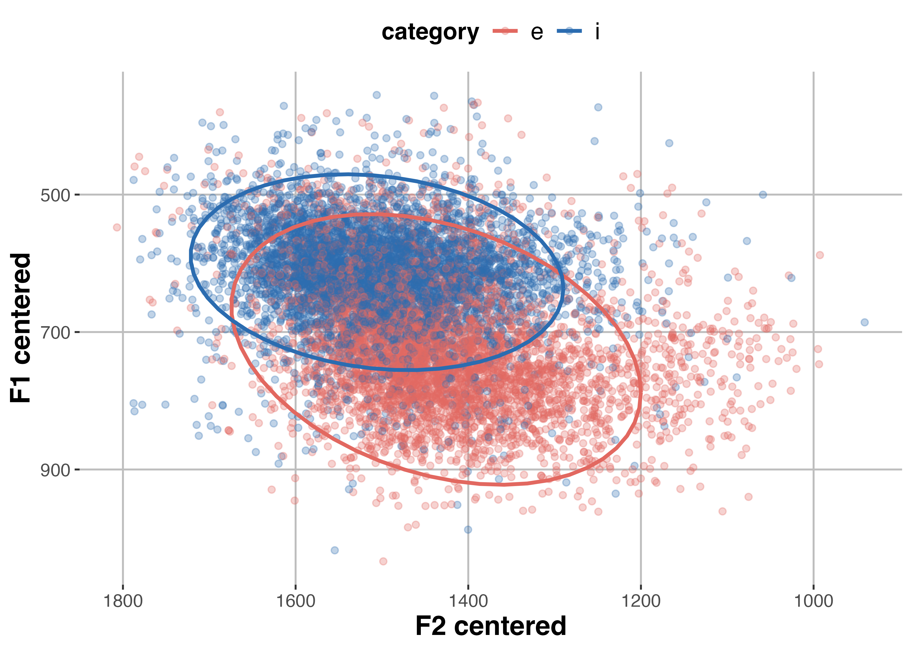

PhD Student · Basque Center on Cognition, Brain and Language
About
I am Ming, a PhD student at the Basque Center on Cognition, Brain and Language, working primarily with Alejandro Tabas (BCBL) and Xin Xie (UC Irvine). My research uses Bayesian cognitive models and deep neural network-based models to understand human speech perception and adaptation.
In my previous life, I was a Mandarin–Arabic translator — Toufig is my Arabic name! I translated two books to Arabic, taught Arabic as a second language, and worked as a conference interpreter.
News
Research
Proceedings of the Society for Computation in Linguistics (SCiL), 2026
▾
A hallmark of learning is generalization to novel instances. In speech, exposure to atypical pronunciation drives perceptual adjustment that can generalize to unheard tokens. Prior work has attributed constraints on generalization primarily to acoustic similarity between exposure and test contexts. We propose that generalization can also be understood as an inference problem: listeners must determine whether, and how strongly, a learned phonetic mapping should apply in a new context. We test this proposal using data from a recent experiment in which listeners were exposed to shifted vowel pronunciations and then tested on minimal pairs varying in lexical frequency. Learning effects appeared strongest when the exposure direction aligned with a high-frequency alternative in mixed-frequency pairs, and were absent for low-frequency pairs. The observed pattern could reflect token-level acoustic similarity, reliance on prior expectations, or frequency-dependent constraints in applying the learned mapping. We formalized these alternatives within a Bayesian belief-updating framework: a talker-specific model assuming full transfer, a mixture-of-expectations model that interpolates between the updated representation and the listener's prior, and a hierarchical Bayesian model that deploys the updated representation with uncertainty. The talker-specific model captured most generalization patterns through its sensitivity to token-level acoustic properties, but overpredicted learning for low-frequency pairs. The hierarchical model best recovered the theoretically central exposure-control contrast pattern, suggesting that lexical frequency may constrain how learned representations are applied. Our results provide a computationally explicit framework for studying how contextual factors shape generalization in speech perception.
Proceedings of the Annual Meeting of the Cognitive Science Society, 2024
▾Speech perception requires inferring category membership from varied acoustic cues, with listeners adeptly adjusting cue utilization upon encountering novel speech inputs. This adaptivity has been examined through the dimension-based statistical learning (DBSL) paradigm, which reveals that listeners can quickly de-emphasize secondary cues when cue correlations deviate from long-term expectations, resulting in cue-reweighting. Although multiple accounts of cue-reweighting have been proposed, direct comparisons of these accounts against human perceptual data are scarce. This study evaluates three computational models — cue normalization, Bayesian ideal adaptor, and error-driven learning — against classic DBSL findings to elucidate how cue reweighting supports adaptation to new speech patterns. These models differ in how they map cues onto categories for categorization and in how recent exposure to atypical input patterns influences this mapping. Our results show that both the error-driven learning and ideal adaptor models effectively capture the key patterns of cue-reweighting phenomena, whereas prelinguistic cue normalization does not. This comparison not only highlights the models' relative efficacy but also advances our understanding of the dynamic processes underlying speech perception adaptation.
PDF ↗Contact
I'm happy to talk about research, collaboration, or anything speech-related. Reach me at the email on the right.